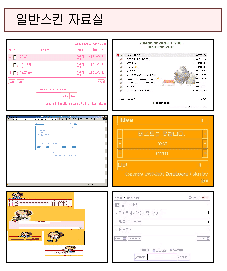

|
최근 게시물 표시
제로보드의 최근 게시물 기능을 이용하기 위해서는 외부로그인때 사용하였던 다음 문장을 사용하여야 합니다
<?
$_zb_url = "제로보드가 설치된 url";
$_zb_path = "제로보드가 설치된 절대경로";
include $_zb_path."outlogin.php";
?>
만약 외부로그인을 이용하기 위해서 위의 5줄을 사용하였다면 다시 사용할 필요는 없습니다
그리고 외부로그인은 사용하지 않고, 최근 게시물만 이용하려면 위의 5줄을 입력하고
아래의 최근 게시물 함수만 사용하시면 됩니다
최근 게시물 목록은 3가지의 종류가 있습니다.
최근 게시물 목록, 최근 설문조사, 최근 이미지 목록 등의 3가지입니다.
그럼 각각의 사용방법을 알아보도록 하겠습니다.
1. 최근 게시물 목록 출력하기
최근 게시물을 출력하고자 하는 곳에 다음과 같이 입력합니다.
<? print_bbs("스킨이름", "타이틀", "게시판이름", 목록갯수, 글자제한)?>
어렵나요?
그럼 쉽게 예를 들어 보도록 하겠습니다.
최근 게시물의 스킨은 제로보드 디렉토리의 latest_skin
에 있습니다.
제로보드 4.1에는 기본으로 default 와 nzeo
스킨 디렉토리가 있습니다.
그리고 각각의 디렉토리 안에는 여러가지 디렉토리가 또 있습니다.
왜냐면 사이트를 제작할때 최근 게시물의 디자인도 여러가지가 될수
있기 때문입니다.
NZEO.COM 의 경우도 메인,커뮤니티,제로보드등의 메인마다 각기
다르게 색상을 지정했습니다.
그럼 스킨이름은 어떻게 정할가요?
만약 nzeo 안의 brown_bbs 라는
스킨을 이용하고 싶다면 스킨 이름은 "nzeo/brown_bbs" 입니다.
타이틀은 최근 게시물 목록 위에 표시되는 이름입니다.
예를 들어 간단히 글자로 "자유게시판" 이렇게
적으셔도 되고, "<img src=/images/freeboard.gif>"
이런식으로 이미지를 입력하셔도 됩니다.
게시판이름은 freeboard 라고 가정합니다.
목록갯수는 뽑아올 목록의 갯수입니다.
5 개 정도가 적당하겠죠?
글자 제한은 뽑아 오는 최근 글의 제목이 너무 길 경우 자르는 크기
입니다.
20~30 정도 사이로 지정하시되, 사이트의 디자인에 맞추시면 됩니다.
그럼 입력할 5가지 항목이 다 정해 졌으니 사용하여 봅시다.
적당히 페이지를 디자인하고 최근 게시물 목록을 출력하고자 하는 곳에
다음과 같이 입력하세요.
<? print_bbs("nzeo/brown_bbs",
"자유게시판", "freeboard",
5, 25)?>
그럼 freeboard 라는 게시판에서 5개의 최근 목록을 뽑아서
25자 이내로 만들어서 출력합니다.
물론 자료만 뽑아오는 것이고 출력은 스킨 파일에 의해서 출력이 됩니다.
이 최근 목록은 default/default_bbs
스킨을 참조하셔서 만들면 됩니다.
만약 nzeo.com 의 메인처럼 첫번째 공지사항은 내용이
나오게 하고, 나머지는 목록으로 나오게 하려면
default/default_notice 스킨을 참조하시면 됩니다.
최근 게시물 목록 스킨은 마지막에 설명하도록 하겠습니다.
2. 최근 설문 조사 출력하기
위의 게시물 목록과 비슷하게 다음을 한줄을 원하는 곳에 넣으시면
됩니다.
<?print_survey("스킨이름","타이틀","게시판
이름", 글자제한)?>
스킨이름이 default_survey 이고, 타이틀이 "월간 설문조사", 게시판 이름은 "vote" 이면 다음과 같이 하면 됩니다.
<?print_survey("default/default_survey",
"월간 설문조사", "vote",
50)?>
3. 최근 이미지 출력하기
<?print_gallery("스킨이름",
"타이틀", "게시판이름", 갯수, 가로크기, 세로크기, 가로갯수)?>
조금 복잡하지만 여러개의 이미지까지 원하는 형태로 출력할수 있습니다.
갤러리 최근 게시물 스킨의 기본스킨은 default_gallery입니다.

만약 위의 그림과 같은 형태로 출력하고 한다면 아래처럼 하면 됩니다.
<?print_gallery("default/default_gallery",
"일반스킨 자료실", "skin",
6, 80, 40,
2)?>
직접 해보시면 쉽게 적용 가능하실것입니다.
|